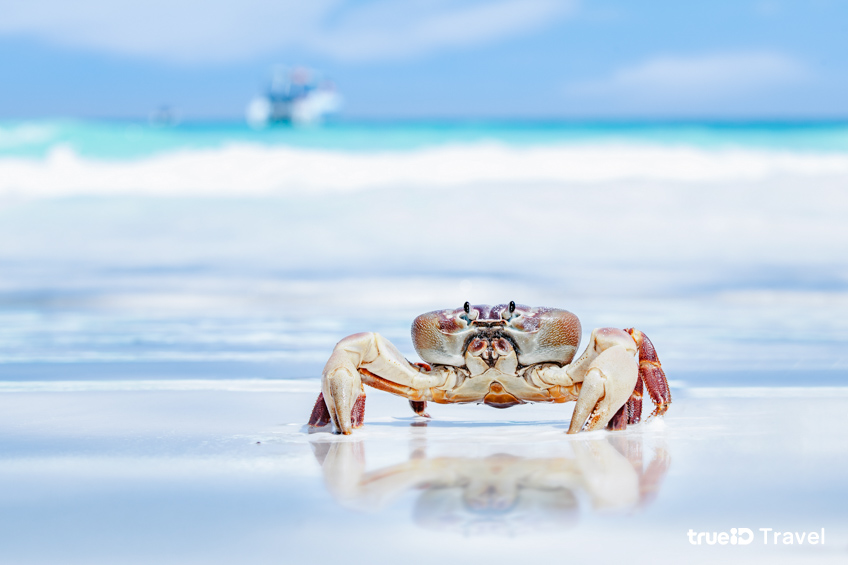

เกาะตาชัย พังงา
เกาะตาชัย ตั้งอยู่ในอุทยานแห่งชาติหมู่เกาะสิมิลัน จังหวัดพังงา และตั้งอยู่ไม่ไกลจากหมู่เกาะสุรินทร์มากนัก ที่นี่ได้ชื่อว่าเป็น “เกาะสวรรค์” อีกแห่งหนึ่งของทะเลใต้ เพราะหาดทรายขาวละเอียดที่ทอดตัวยาวให้ความรู้สึกสบายทุกครั้งที่ได้สัมผัส น้ำทะเลที่ใสสะอาดเหมือนได้ว่ายอยู่กลางสระว่ายน้ำขนาดใหญ่ และทรายขาวราวกับคอฟฟี่เมต ทั้งหมดรวมอยู่ที่เกาะตาชัยแห่งนี้
